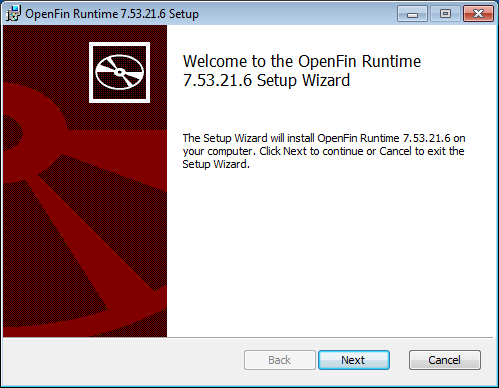
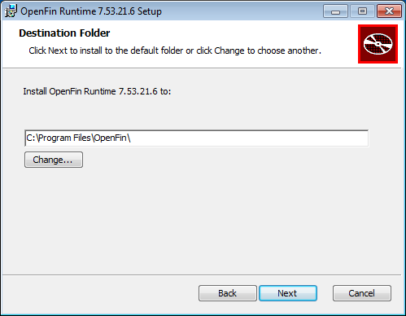
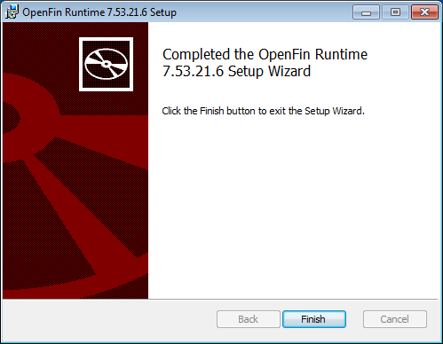

Download the following files using the link provided by your Customer Success representative:
- OpenFin_RunTime<version>.msi
- tt-shortcut-generator.exe
- tt-startup-shortcut-generator.exe
Configure registry keys for the desired customization.
Note: These registry keys can be generated using Group Policy.
Disable Auto Updates
If the user wants to disable auto updates, the registry key needs to be set first. Please follow the following instructions to set disableAutoUpdates registry key:
Data Type: DWORD (REG_DWORD)
Expected Value: 0 or 1
0: TT Desktop will automatically update itself when a newer version is available.
1: RVM will not update itself.
Default Value: 0
Usage example:
Key: HKEY_CURRENT_USER\Software\OpenFin\RVM\Settings\disableAutoUpdates
Value: 1 - When the RVM is run it will not check for an update.
Overriding Install Location
If the user wants to override the default install location, the registry key needs to be set first. Please consult the following to set the rvmInstallDirectory registry key:
Data Type: String (REG_SZ)
Expected Value: A folder path where the RVM file is located
Default Value: %LOCALAPPDATA%\OpenFin
Usage example:
Key: HKEY_CURRENT_USER\Software\OpenFin\RVM\Settings\Deployment\rvmInstallDirectory
Value: %LOCALAPPDATA%\CustomFolder
If the RVM executes from a different folder, it will copy itself to the custom folder and re-run from there.
Run the MSI Installer.
Open the OpenFin_RunTime<version>.msi file and follow the installation setup prompts.

Note: During the installation setup, if an alternate destination folder path was defined in a registry key, the Destination Folder dialog field should display the location of the custom folder.

Click Next, then click Install.

Click Finish.

Install one, or both methods of opening TT Desktop:
-
Method 1: Desktop shortcut icon
The TTD desktop shortcut is generated by running the tt-shortcut-generator.exe file provided by your Customer Success representative.
After running the executable, the TTD shortcut should be available on the desktop.

-
Method 2: Start menu shortcut
The TTD desktop shortcut is generated by running the tt-startup-shortcut-generator.exe file provided by your Customer Success representative.
After running the executable, a TT folder will be created in the Start menu and a TTD shortcut will be placed inside the folder.